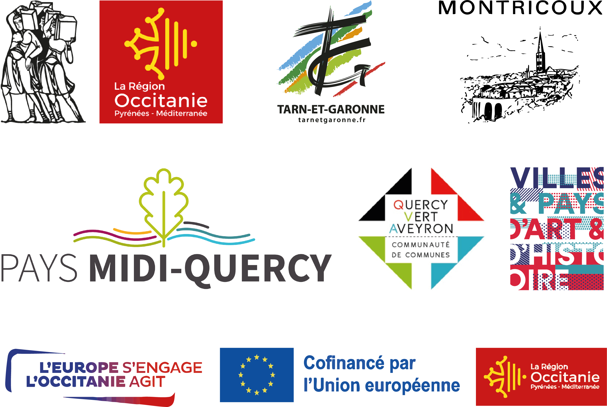

Pour profiter pleinement du parcours, autorisez la géolocalisation sur votre appareil.
À la mémoire d'André Lacombe
Ce parcours vous propose de découvrir le village de Montricoux et son patrimoine artistique et architectural. Au fil d’un récit
incarné par des habitants, des artistes et des acteurs culturels, laissez-vous guider dans les rues de ce village médiéval.
Chargez la cartographie au format numérique en flashant le QR code à la station A (La bascule) et déplacez-vous dans le
village à la rencontre des capsules sonores accessibles d’un clic.
PARCOURS À LA MÉMOIRE D’ANDRÉ LACOMBE
La commune de Montricoux souhaite dédier ce parcours à André Lacombe disparu en 2023. Il avait à cœur de transmettre sa passion pour son village et son histoire.
Distance : env. 2 km
Durée : env. 1/2h de marche, 1h avec les points d’écoute
Avec les témoignages de:
Aquilino Torrao
Astrid Torrao
Diego Lara
Isabelle Fléouter
Isabelle Van Mastrigt
Jean-Claude Herraïz
Léa Gérardin-Macario
Marie Ange Namy
Michel Jannin
RV Larbre
Thierry Faucher
Équipe:
Maitrise d’ouvrage : Mairie de Montricoux avec l’appui technique de l’équipe du PETR du Pays Midi-Quercy
Muséographie : Camille Provendier
Capsules sonores : David Lagarde
Conception graphique et illustrations : Lucie Sahuquet
Développement web : Sara Lana
Avec le soutien de:

Pour toute information complémentaire, veuillez contacter la mairie de Montricoux.